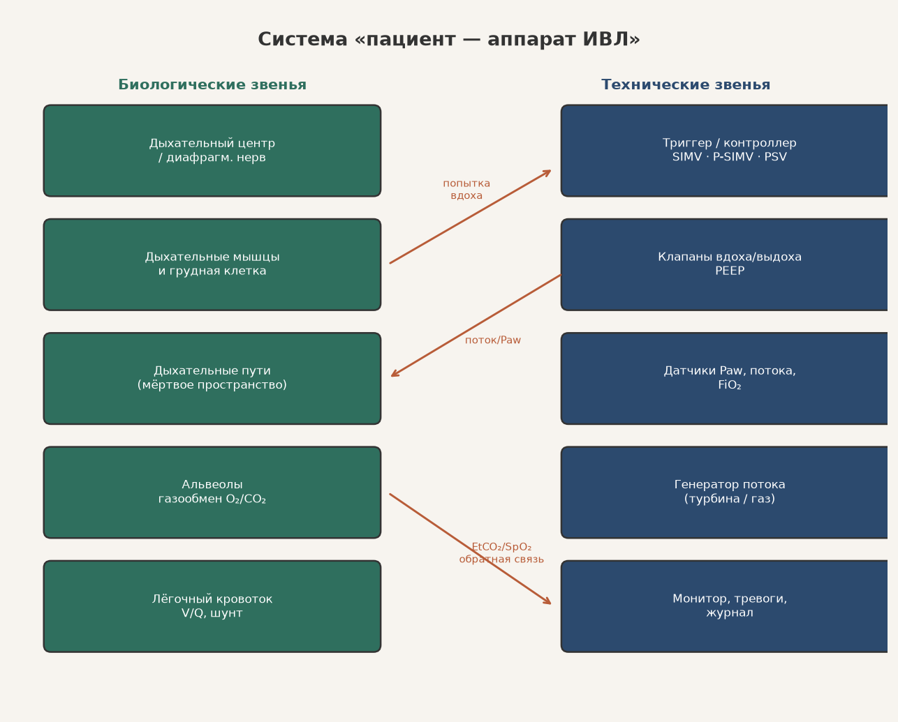
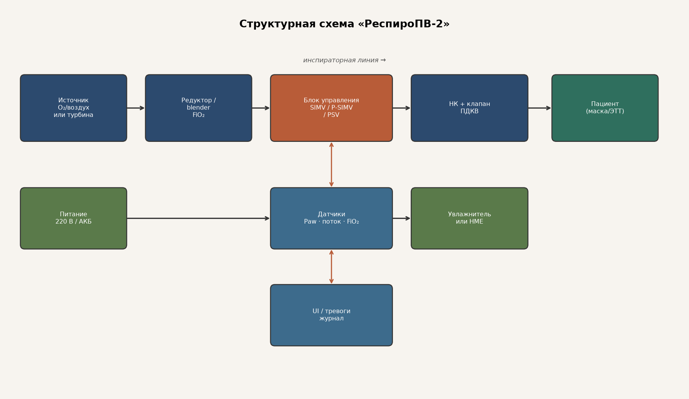

ФЕДЕРАЛЬНОЕ АГЕНТСТВО ПО ОБРАЗОВАНИЮ
МОСКОВСКИЙ АВИАЦИОННЫЙ ИНСТИТУТ
(НАЦИОНАЛЬНЫЙ ИССЛЕДОВАТЕЛЬСКИЙ УНИВЕРСИТЕТ)
Кафедра биомедицинской техники
ОТЧЁТ
по лабораторной работе
«Устройство и основные узлы аппаратуры
для проведения искусственной вентиляции легких»
Тема проекта: аппарат принудительно-вспомогательной ИВЛ
«РеспироПВ-2» (стационарный и портативный варианты)
Специальность: Инженерное дело в медико-биологической практике
Студент: _______________________ / ___________ /
Группа: _______________________
Преподаватель: доц., к.м.н. И.Н. Белозерова
Москва — 2026
Искусственная вентиляция лёгких (ИВЛ) — форма респираторной поддержки, призванная обеспечивать оксигенацию и удаление углекислого газа, когда дыхательная система пациента не справляется с этой задачей самостоятельно. Согласно методическому пособию, главные причины применения ИВЛ — неспособность к достаточной оксигенации и утрата адекватной альвеолярной вентиляции.
Цель лабораторной работы — на основе изученного строения респираторной системы и устройства аппаратуры ИВЛ выполнить проектирование медицинского аппарата, обеспечивающего принудительно-вспомогательные режимы вентиляции (SIMV / P-SIMV), с вариантами применения в стационаре и в переносном компактном исполнении.
Объект проектирования — двухвариантный аппарат принудительно-вспомогательной ИВЛ «РеспироПВ-2».
Главная целевая функция: обеспечить замену (частичную или полную) функции внешнего дыхания пациента путём управляемой подачи газовой смеси в дыхательные пути с синхронизацией аппаратных циклов с попытками самостоятельного дыхания (режимы SIMV и P-SIMV).
Дополнительная главная функция: обеспечить мониторинг и регистрацию параметров вентиляции и газообмена для безопасного ведения пациента в стационаре и при транспортировке.
Измерить: Paw, поток, Vt, VE, f, PEEP, FiO₂; при наличии модуля — SpO₂ и EtCO₂.
Зарегистрировать: кривые давления/потока/объёма; журналы тревог; уставки режимов; события синхронизации.
Отобразить: режим и уставки; измеренные параметры; графики; статус питания; тревоги.
Диагностировать: отклонение VE; диссинхронию; критические отклонения Paw и FiO₂; целостность контура.
Нормализовать: газообмен через Vt/Pinsp, f, PS, PEEP, FiO₂; работу дыхания через синхронизацию; ФОЕ через PEEP.
Обеспечить замену функции: внешнего дыхания и частично — согревания/увлажнения вдыхаемого газа.
Система «пациент — аппарат ИВЛ» образует замкнутый контур управления.
Биологические звенья: воздуховоды; дыхательные пути (мёртвое пространство); альвеолы; дыхательные мышцы; дыхательный центр; лёгочный кровоток (V/Q).
Технические звенья: источник газа/турбина; редуктор; блок управления; смеситель; контур и НК; ПДКВ; датчики; UI/тревоги; увлажнитель/HME.

Рисунок А.1 — Схема биологических и технических звеньев
| Критерий | Параметр | Цель |
|---|---|---|
| Эффективность вентиляции | Отклонение VE | ≤ ±10 % |
| Точность объёма | Погрешность Vt | ≤ ±(10 мл + 10 %) |
| Синхронизация | Задержка триггера | ≤ 100 мс |
| Безопасность | Предел Paw | ≤ 60–80 см вод. ст. |
| Автономность (П) | АКБ | ≥ 4 ч |
| Масса (П) | Без баллона | ≤ 6 кг |
Модульная схема: генератор потока, блок управления циклом, дыхательный контур с НК и ПДКВ, мониторинг; исполнения С и П.
Режимы: SIMV (volume), P-SIMV (pressure), дополнительно PSV и апноэ-вентиляция.

Рисунок Б.1 — Структурная схема «РеспироПВ-2»
Назначение: принудительно-вспомогательная ИВЛ взрослых и подростков (≥ 25 кг) в ОРИТ, операционной и при транспортировке.
Параметры: Vt 100–1000 мл; SIMV 4–40 вд/мин; Pinsp 5–50; PEEP 0–20; PS 0–30; FiO₂ 0,21–1,0.
Исполнение С: 220 В, разводка газов, увлажнитель, UI ≥ 10". Исполнение П: турбина + АКБ ≥ 4 ч, ≤ 6 кг, IP33, HME.
Безопасность: ГОСТ Р МЭК 60601-1 / 60601-2-12; предохранительный клапан; обязательные тревоги.
Рассмотрены три варианта: пневмоавтоматика; полностью электронный турбинный; гибридный модульный. Принят вариант 3 — единая цифровая плата и датчики, в стационаре сетевой blender, в портативе турбина + АКБ, механический НК/ПДКВ как fail-safe.

Рисунок В.1 — Сравнение вариантов

Рисунок Г.1 — Эскизный общий вид (С и П)

Рисунок Г.2 — Дыхательный контур и клапанный узел
Полная спецификация — в файле Спецификация.md и в разделе Г.2 файла DOCX.
Сформулированы цель и задачи МА и П, выявлены звенья системы «пациент–аппарат», определены критерии качества. Разработаны ТЗ и ТП на аппарат «РеспироПВ-2» с режимами SIMV/P-SIMV в двух исполнениях. Подготовлены эскизы, спецификация и презентация для защиты.
1. Белозерова И.Н. Устройство и основные узлы аппаратуры для проведения искусственной вентиляции легких. — М.: МАИ, 2010.
2. ГОСТ Р МЭК 60601-1. Изделия медицинские электрические. Часть 1.
3. ГОСТ Р МЭК 60601-2-12. Частные требования безопасности к аппаратам ИВЛ.
4. Задание к лабораторной работе «Искусственная вентиляция легких».